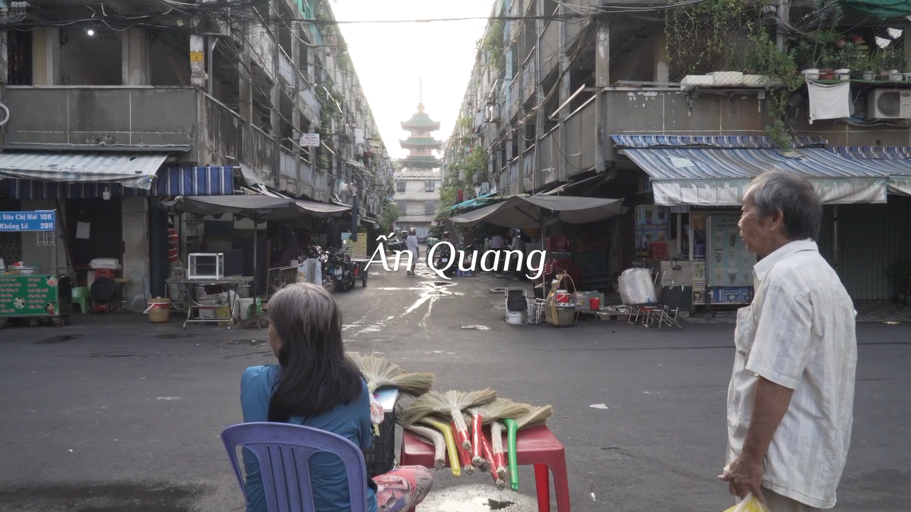
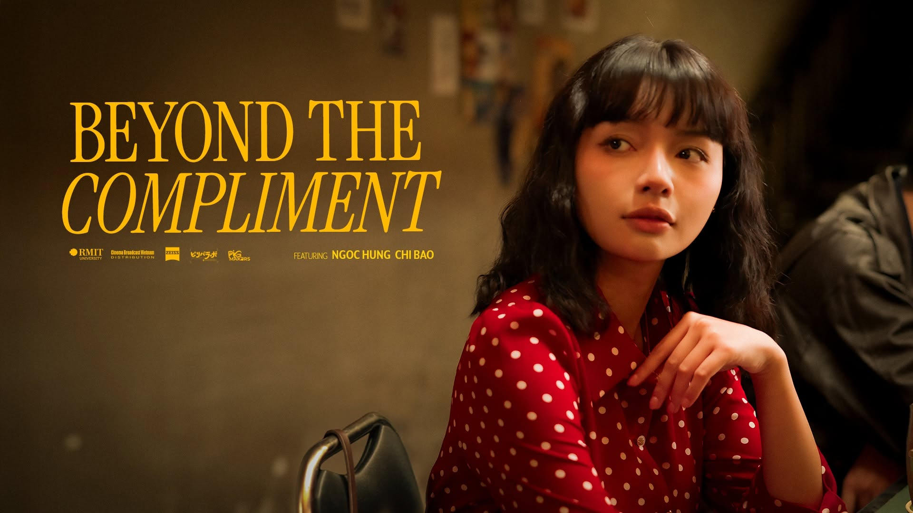

Films
For films, I just recently got myself into, so this is a collection of all the film I took part in different roles.

Film 1
An Quang
Film project information and images will be added here.
Details
Placeholder content for the first film project.
Films
Selected film, video, and moving-image work.
Film 2
Films
Film project information and images will be added here.
Details
Placeholder content for the second film project.
BEYOND THE COMPLIMENT - Short Film (a remake of "As good as it gets")
Beyond the
Compliment
Vietnamese remake of "As good as it gets" (1997)
Directed by Vu Hoang
Details
"And it's never too late to say the word love...
A
middle-aged writer struggling with obsessive-compulsive disorder
(OCD) and a single mother unexpectedly find themselves caught up
in an unusual romance — where awkwardness, together with old
wounds from the past, slowly becomes a kind of healing emotion,
even though both of them have lost faith in love."
A more localized and deeper Vietnamese adaptation of the endearing clumsiness between Thanh and Thu, set on a romantic evening bathed in the glow of love's lights.
Credits
Featuring Chi Bao, Ngoc Hung
Director | Vu Hoang
Production Manager | Hoang Lan
Producer | Thu Minh
Director of Photography | Hoang Quan
Production
Designer | Binh Minh
Post Producer | Nguyen Tuan Minh
Support Actor | Khoi Vu, Minh Long
Extras | Mai Uyen,
Truong Phong, Tony Quan, Thieu Thinh, Khanh Lin, Tin Nguyen,
Thanh Xuan, Dminh Nguyen, Khanh An, Anna, Viv Leh, Quan Le, Sung
Han
Line Producer | Ha Nam Ngo, Linh Bui
Location Manager |
Hoang Lan
Production Assistant | Khoi Vu, Quan Le, Thanh
Xuan
1st Assistant Director | Thu Minh
2nd Assistant Director |
Quo Nhu
Script Supervisor | Quo Nhu, Thu Minh
Storyboard Artist | Holeo
1st Unit Cam Operator | Vincent Vo
2nd Unit Cam Operator |
Nhi Mach
AC - Focus Puller | Kim Le, Hao Le
Gaffer | Ryan Nguyen
Grip | Sung Han, Viv Leh, Duy Vo,
Thieu Thinh
Sound Mixer | Nguyen Tuan Minh
Boom
Operator | Dminh Nguyen
DIT | Ha Nam Ngo
BTS
Photographer | Quan Le, Hoang Lan
Art Director | Nong Nguyen
Props Master | Anna
Set
Designer | Khanh An, Phuong Uyen
Wardrobe | Khanh Linh
Food Stylist | Thanh Xuan
MUA | Tailalala, Linh Bui,
Binh Minh
Editor | Vu Hoang, Nguyen Tuan Minh
Colorist | Thu Minh
Sound Designer | Nguyen Tuan Minh
Foley Artist |
Nguyen Tuan Minh
Subtitle | Binh Minh
Post
Supervisor | Vu Hoang, Hoang Quan
OST "Khoảng Không" Hong Phuc ft. Huyen Trang
For More Details
Visit Beyond The Compliment Shortfilm on YouTube.
Visit Beyond The Compliment's Director Post on Facebook.
Visit Beyond The Compliment's Director Vu Hoang on Facebook.
Veil of Ash.mp4
Veil of Ash
A blade, a mask, a whisper. This film explores memory, fate, and brotherhood through a lyrical animated world.

Details
Placeholder film detail content for the Veil of Ash project.